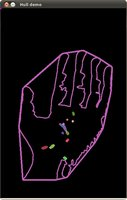

install
cmake -DCMAKE_BUILD_TYPE=Release -DCMAKE_INSTALL_PREFIX=/home/promote/NeDisk/third_part/opencv-3.4.2/install_gcc7 -D OPENCV_EXTRA_MODULES_PATH=/home/promote/NeDisk/third_part/opencv_contrib-3.4.2/modules -D WITH_GTK=ON -D WITH_CUDA=ON -D BUILD_opencv_cudacodec=OFF -D BUILD_TIFF=ON ..
如果安装过程中出现，下载失败，查看build文件夹下的CMakeDownloadLog.txt，在此处下载，保存至opencv文件夹下的.cache文件夹里的对应位置
opencv3.4.2版本，可直接复制替换掉opencv-3.4.2目录下的.cache文件夹,就不用下载了。
CMake 指定使用OpenCV版本
set(OpenCV_DIR "/home/promote/NeDisk/third_part/opencv-4.5.2/install/lib/cmake/opencv4") #OpenCVConfig.cmake path
find_package(OpenCV REQUIRED)
include_directories(${OpenCV_INCLUDE_DIRS})
add_executable(main main.cpp)
target_link_libraries(main ${OpenCV_LIBS})
fatal error: opencv2/xfeatures2d/cuda.hpp: No such file or directory
在 <你的路径>/opencv-3.4.2/modules/stitching/CMakeLists.txt 里添加
INCLUDE_DIRECTORIES("/home/promote/NeDisk/opencv_contrib-3.4.2/modules/xfeatures2d/include")
error while loading shared libraries: libopencv_imgproc.so.3.4: cannot open shared object file: No such file or directory
export LD_LIBRARY_PATH=$LD_LIBRARY_PATH:/home/promote/NeDisk/third_part/opencv-3.4.2/install_gcc7/lib
convexHull
std::vector<cv::Point2f> points;
for(unsigned int i = 0; i<current_cluster->points.size(); i++)
{
cv::Point2f pt;
pt.x = current_cluster->points[i].x;
pt.y = current_cluster->points[i].y;
points.push_back(pt);
}
std::vector<cv::Point2f> hull;
cv::convexHull(points,hull);
polygon_.header = in_ros_header;
for(size_t i=0; i<hull.size()+1; i++)
{
geometry_msgs::Point32 point;
point.x = hull[i%hull.size()].x;
point.y = hull[i%hull.size()].y;
point.z = min_point_.z;
polygon.points.push_back(point);
}

minAreaRect
cv::RotatedRect box= minAreaRect(hull);
返回值内容：
center The rectangle mass center.
size Width and height of the rectangle.
angle The rotation angle in a clockwise direction. When the angle is 0, 90, 180, 270 etc., the rectangle becomes an up-right rectangle.
undefined reference to `TIFFLastDirectory@LIBTIFF_4.0'
target_link_libraries(${PROJECT_NAME}_lib
...
/usr/lib/x86_64-linux-gnu/libtiff.so.5
)